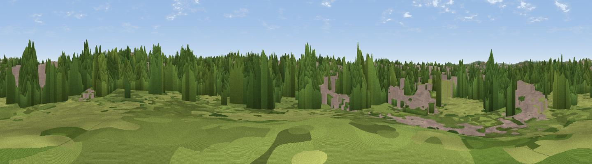

Park Hill
#45174 in England · top 62% of its area beats it · near WillesdenWhere it is
The exact computed spot (TQ 22029 84066). Click the marker for map links.
The view, rendered

A 360° render of this exact spot computed from the terrain model, tree cover and land cover — summer colours, afternoon light, calibrated against photographs of famous viewpoints. Real trees, hedges and buildings will differ in detail.
The panorama
Grey silhouette: terrain skyline in each direction (720 bearings, Earth curvature and refraction included). Dashed green: skyline with trees (+15 m) and buildings (+8 m) as obstacles. Blue strip: how far the ground is visible on each bearing.
Where the view opens
Wedge length = distance to the farthest visible ground on that bearing (vegetation-aware). Rings at 10, 25 and 50 km.
What fills the view
45% built-up · 37% woodland · 18% grassland
Angular shares of the visible panorama (visual magnitude), not map area. Landscape diversity 0.45 (0–1 Shannon).
Key numbers
More beautiful places nearby
The staircase of upgrades: each row has a higher view potential than everything closer. Driving times are estimates from straight-line distance, calibrated against real road routing — check an actual route before setting out.
| Place | Direction | Drive | Score |
|---|---|---|---|
| Viewpoint near Willesden | N · 2 km | ~6 min | 26.3 |
| Primrose Hill | E · 6 km | ~12 min | 27.2 |
| Horsenden Hill | W · 6 km | ~13 min | 29.3 |
| Parliament Hill | ENE · 6 km | ~13 min | 33.3 |
| Harrow on the Hill | WNW · 8 km | ~15 min | 42.3 |
| Viewpoint near Buckland | S · 31 km | ~49 min | 52.7 |
| Viewpoint near Chaldon | SSE · 32 km | ~49 min | 60.2 |
| Viewpoint near Lower Kingswood | S · 32 km | ~49 min | 67.7 |
51.54231, -0.24174 · source: osm peak · position refined by local search. Computed location — check access rights before visiting.